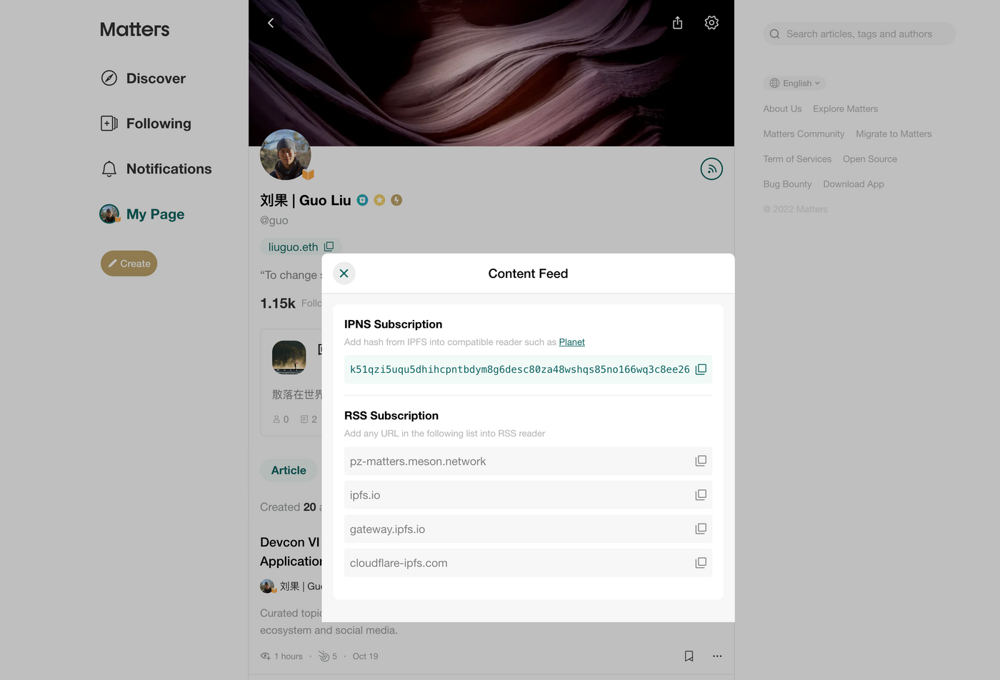
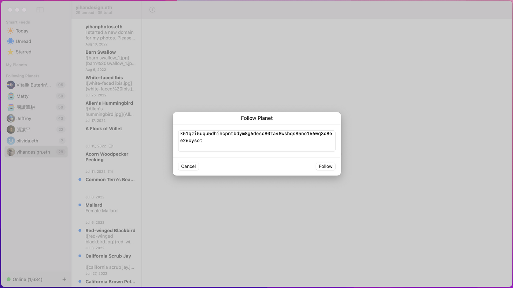
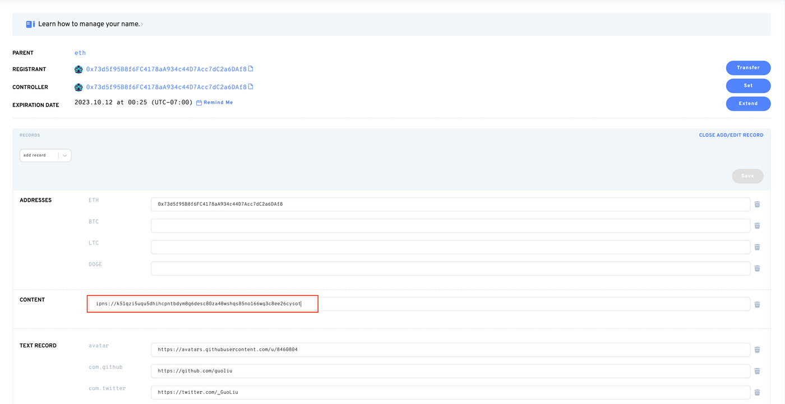
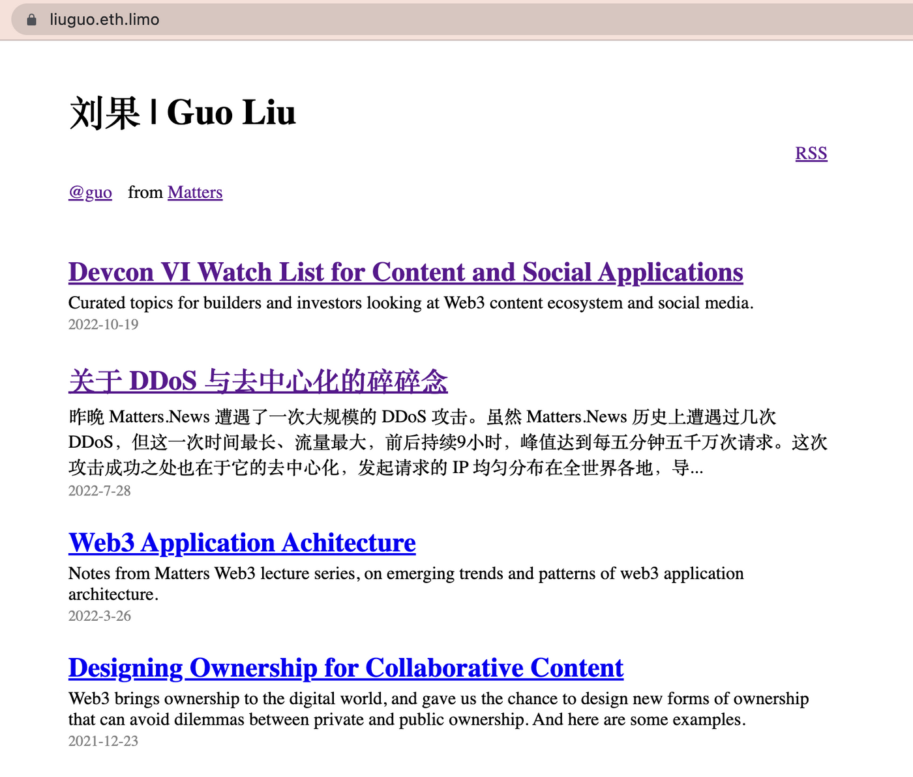

IPNS Content Feed 还可以拿来做什么？
2022 · 10 · 24
Matters 开始测试基于 IPNS 的 content feed，目前拥有 Traveloggers 的朋友可以提前试用。点击个人主页右边“信号”图标，会显示 Content Feed 弹窗，绿色部分即是 IPNS hash。

IPNS 是 IPFS 设计中用于处理动态数据的部分。用 IPNS hash 指向主页和内容，让用户能够不断更新和增减内容，同时内容指纹保持不变。
实现的方式是，每个用户有一对密钥，每次发布时通过密钥签署、证明内容的真实性。目前密钥存在 Matters 的数据库中，由 Matters 服务器代为签署。
配合 Planet，用户可以通过 IPNS hash 来点对点传输数据，不再需要经过 Matters 的服务器，也不再依赖互联网的域名系统。
除此之外，IPNS hash 可以用来做什么？
1. 为珍视的内容进行备份
Matters 上的内容存储在 IPFS 上，让内容更难以被删除和封锁，但无法保证“永久存储”，因为依然依赖 Matters 提供的 IPFS node pin 数据。
最理想的让内容免于丢失和封锁的存储方式，是使用者各自在本地存一份。Planet 的订阅功能正是这么实现的，订阅者同时在本地存储了订阅的内容，并在后续协助内容以点对点的形式分发。
下载 Planet 后，点击左下角“+”，并选择“Follow Planet”，输入个人主页中得到的 IPNS 指纹，便可以点对点订阅内容，同时为内容进行备份。

2. 为自己的 ENS 配置个人页面
Matters 提供的 IPNS hash 中不仅存有用户发布的内容，还存有一个简单的静态个人主页。在任意一个支持 IPNS 的 IPFS 公共网关中直接打开 IPNS hash，就可以看到这个个人主页。比如，这是我的 IPNS hash 在 ipfs.io 网关中的路径：
https://ipfs.io/ipns/k51qzi5uqu5dhihcpntbdym8g6desc80za48wshqs85no166wq3c8ee26cysotda
IPNS 也是 ENS 支持的标准，意味着用户可以通过 EIP-1577 标准将这个静态页面设为自己在 Web3 中完全分布式分发的个人主页。
进入 ENS 管理界面，选择想要使用的域名，点击“add/edit record”，并在“content”一栏填入“ipns://”加上 Matters 生成的 IPNS hash。最后点击 save，在钱包上确认并支付 gas fee。

几分钟后，就可以通过 eth.link、eth.limo 等服务或者 Brave 浏览器等支持 ENS 的客户端访问自己在 ENS 上的个人主页了。Planet 用户可以通过 liuguo.eth 订阅我的内容，而这是我的 ENS 域名通过 eth.limo 访问的结果：

未来已来，我们让它均匀分布。Enjoy!
@刘果 | Guo Liu 你好，你曾支持的作品在上週獲得了最多閱讀時長，根據「NFT創作基金」活動規則，已為你送上100 Likecoin 獎勵。謝謝你與我們一起挖掘優質作品。
@刘果 | Guo Liu 你好，你曾支持的作品在發布當週獲得了超過半小時閱讀時長，根據「NFT創作基金」活動規則，已為你送上 100 Likecoin 獎勵。謝謝你與我們一起挖掘優質作品。